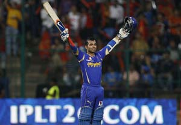

Friday, April 21, 2012

::::IPL V ::::
The fifth edition of the Indian Premier League has completed a fortnight but despite some good matches, the cricket fans haven't warmed up to it as was expected before the start of the season.
Last year, IPL could not match up to the expected viewership because it succeeded the World Cup. Indian cricket fans' dream of a World Cup victory was fulfilled and nothing could have matched up to the euphoria that the win had created. Hence there was reason why IPL was not a success in 2011.
This year the situation is completely opposite. The Indian team hasn't played well in the last 7-8 months. Therefore, for disappointed Indian fans, IPL was just the right change and distraction, but even then the IPL viewership has been the lowest in five years.
Despite these dwindling numbers, the IPL 5 had some great encounters, good performances and unexpected failures.
TOP 5 HITS
1. Ajinkya Rahane: Rajasthan Royals has an in-form opener in Ajinkya Rahane. He's been the architect of the Royals' surge. Rahane made sure he gets the rewards after the all the hard work and scored a century against Bangalore off 60 balls.
2. Owais Shah: Another Rajasthan batsman makes it to my list. There has never been a doubt over Shah's talent but his consistency has always been under scanner. Luckily for Royals, he's been in good touch so far.
3. Faf du Plessis: He made a last-minute entry into the IPL after his T20 exploits for South Africa. His IPL debut wasn't impressive. He had a few good starts but couldn't capitalize on them.
4. Munaf Patel: He may not be a regular face in the Indian team - courtesy his inconsistency and poor fitness, but Munaf has done well for Mumbai Indians this season. So far he has picked 10 wickets in four matches which include two four-wicket hauls.
5. Sourav Ganguly: Although the critics feel the Pune Warriors have a weaker squad as compared to other teams of the IPL, but they are currently sitting on the second spot, beating bigger teams like Mumbai,Chennai,Delhi. And the win was credited to their captain Sourav Ganguly.